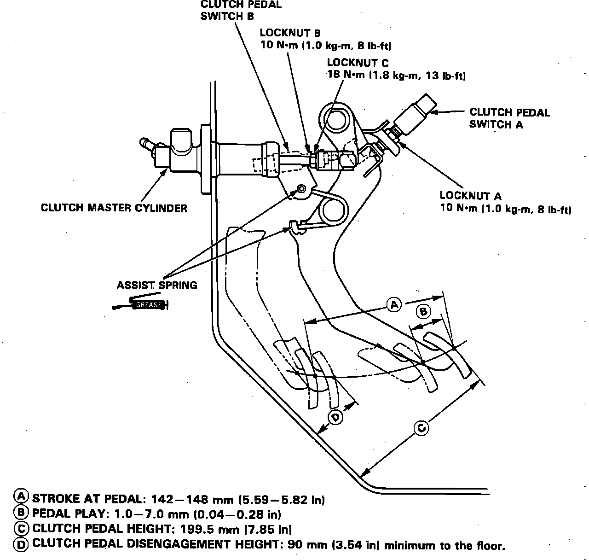

Clutch: Adjustments
Fig. 5 Clutch Pedal Adjustments:

1. Disable coded theft protection system as described under Technician Safety Information.
2. Measure clutch pedal disengagement height, pedal height, freeplay and stroke at pedal.
3. Loosen locknut A, and turn pedal switch until it no longer touches clutch pedal.
4. Loosen locknut C, then rotate pushrod in or out to bring pedal height and stoke at pedal within specifications, Fig. 5.
5. Tighten locknut C.
6. Screw in pedal switch A until it contacts clutch pedal.
7. Turn switch an additional 1/4-1/2 turn, then tighten locknut A.
8. Loosen locknut B and pedal switch B.
9. Measure clearance between floor board and clutch pedal with clutch fully depressed.
10. At fully depressed position, release pedal 0.59-0.79 inch and hold.
11. Adjust pedal switch B ensuring engine will start with clutch pedal in this position.
12. Turn pedal switch B an additional 1/4-1/2 turn, then tighten locknut B.
13. Restore coded theft protection system and rearm airbag.